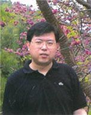

熊 斌 第46届、49届和51届国际数学奥林匹克中国队领队、主教练，中国数学会普及工作委员会副主任，中国数学奥林匹克委员会委员．华东师范大学数学系教授，国际数学奥林匹克研究中心主任．多次参与中国数学奥林匹克、全国高中数学联赛、全国初中数学竞赛、西部数学奥林匹克、女子数学奥林匹克、国际城市青少年数学邀请赛等竞赛的命题工作．在国内外发表了100余篇论文，主编和编著的著作150多本．
冯志刚 上海市上海中学特级教师，中国数学奥林匹克高级教练员．三次出任IMO中国国家队副领队．所教学生中有5人入选IMO中国国家队，并都获得了国际数学奥林匹克金牌．在各级别的数学竞赛中，指导的学生有近300人次获得一等奖（上海市级以上），有50余人次获得参加中国数学奥林匹克（冬令营）的资格，20多人次进入国家集训队．发表论文10多篇，出版专著数本，此外还参与了多套丛书的编写工作．